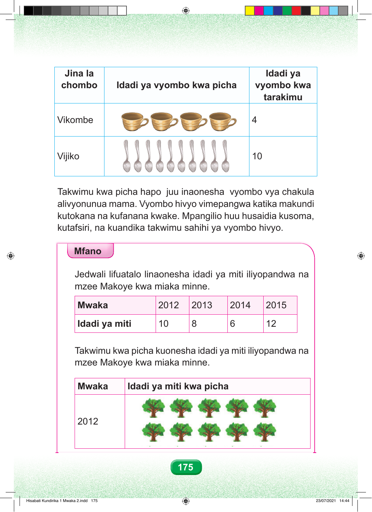

Jedwali lina safu tatu: jina la chombo, idadi ya vyombo kwa picha, na idadi ya vyombo kwa tarakimu. Mstari wa kwanza. Jina la chombo ni vikombe. Idadi ya vyombo kwa picha ni vikombe vinne. Idadi ya vyombo kwa tarakimu ni nne. Mstari wa pili. Jina la chombo ni vijiko. Idadi ya vyombo kwa picha ni vijiko kumi. Idadi ya vyombo kwa tarakimu ni kumi. Takwimu kwa picha hapo juu inaonesha vyombo vya chakula alivyonunua mama. Vyombo hivyo vimepangwa katika makundi kutokana na kufanana kwake. Mpangilio huu husaidia kusoma, kutafsiri, na kuandika takwimu sahihi ya vyombo hivyo. Mfano Jedwali lifuatalo linaonesha idadi ya miti iliyopandwa na mzee Makoye kwa miaka minne. Jedwali la juu lina safu nne za miaka na idadi ya miti iliyopandwa. Mwaka elfu mbili na kumi na mbili, idadi ya miti ni kumi. Mwaka elfu mbili na kumi na tatu, idadi ya miti ni minane. Mwaka elfu mbili na kumi na nne, idadi ya miti ni sita. Mwaka elfu mbili na kumi na tano, idadi ya miti ni kumi na miwili. Chini yake kuna takwimu kwa picha. Takwimu hizi zinaanzia ukurasa huu na zinaendelea katika ukurasa unaofuata. Safu ya mwaka elfu mbili na kumi na mbili ina picha kumi za miti. Hivyo, idadi ya miti ni kumi. 2012 175 Hisabati Kundirika 1 Mwaka 2.indd 175 23/07/2021 14:44